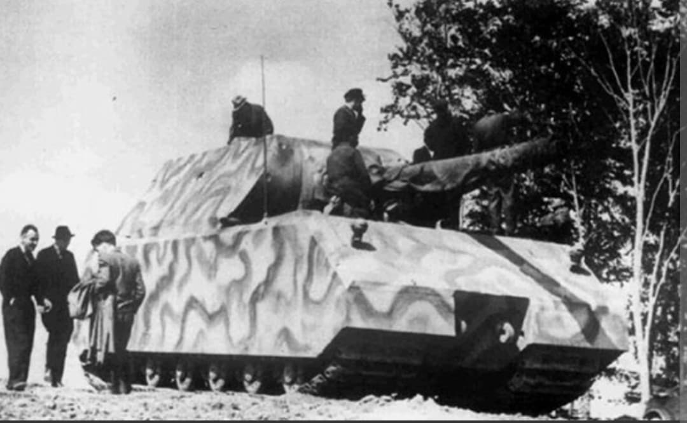
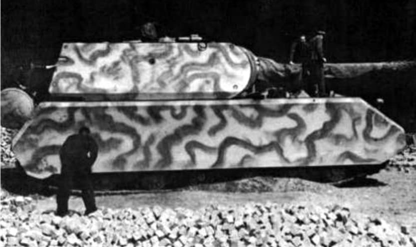

Introduction
Le Panzerkampfwagen VIII « Maus » (Sd.Kfz. 205) est le char super-lourd le plus massif jamais assemblé. Imaginé par Ferdinand Porsche sous l'impulsion directe d'Adolf Hitler en 1942, ce mastodonte de 188 tonnes incarnait la recherche de la supériorité matérielle absolue.
Conçu pour percer les lignes fortifiées ennemies tout en restant invulnérable aux tir adverses, il n'a dépassé le stade du prototype qu'à deux exemplaires avant la chute du régime nazi.

Conception et caractéristiques techniques
Pour propulser une telle masse, le Maus utilisait une motorisation hybride complexe : un moteur à combustion (Daimler-Benz) entraînant une génératrice électrique qui alimentait deux moteurs électriques reliés aux chenilles. Son blindage atteignait **220 mm à l'avant du châssis** et **240 mm sur la tourelle**.
Son armement principal se composait d'un canon de **12,8 cm KwK 44 L/55**, complété en jumelage par un canon de **7,5 cm KwK 44**. Sa masse extrême l'empêchait d'emprunter la quasi-totalité des ponts d'Europe : il avait donc été conçu pour franchir les cours d'eau en immersion complète à l'aide d'un snorkel.

1944–1945 : Fin du projet et capture
Seuls deux prototypes (le V1 sans tourelle armée et le V2 complet) ont été construits à Böblingen et testés au centre d'essais de Kummersdorf. Face à l'impasse stratégique, aux coûts de production exorbitants et à la consommation démesurée de carburant, le projet fut officiellement annulé fin 1944.
En avril 1945, devant l'avancée de l'Armée rouge, les deux prototypes furent sabordés par les Allemands. Les Soviétiques récupérèrent les épaves et assemblèrent la tourelle du V2 sur le châssis du V1. Ce véhicule hybride unique est aujourd'hui conservé au **musée des blindés de Koubinka** près de Moscou.
Voir aussi
Page du Musée HOP WW2 – Section Véhicules Terrestres Allemands